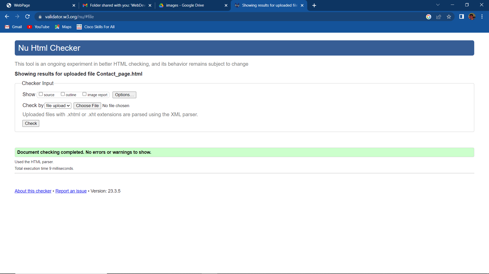
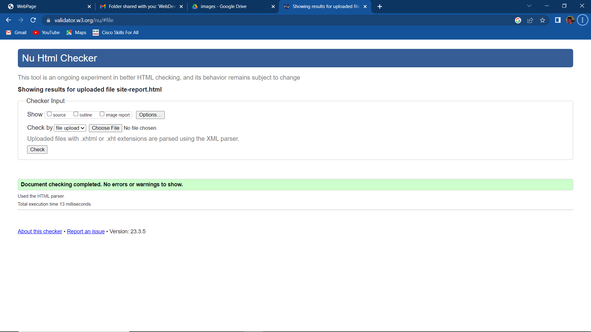
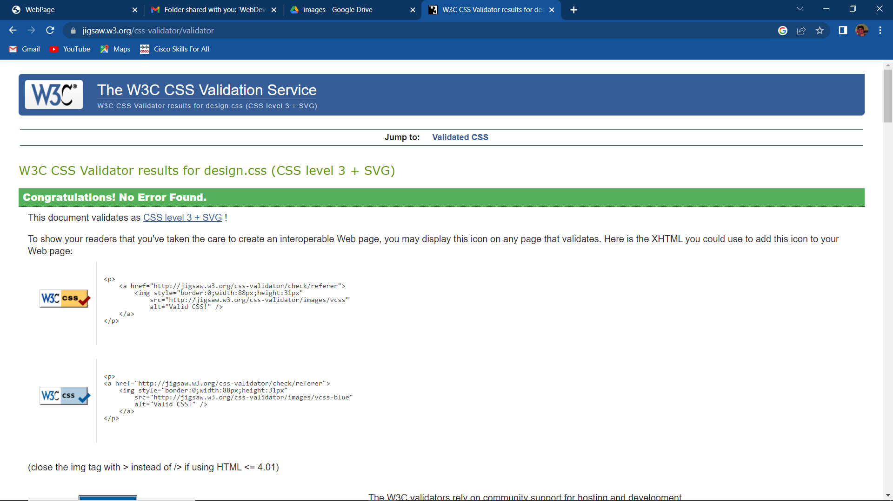
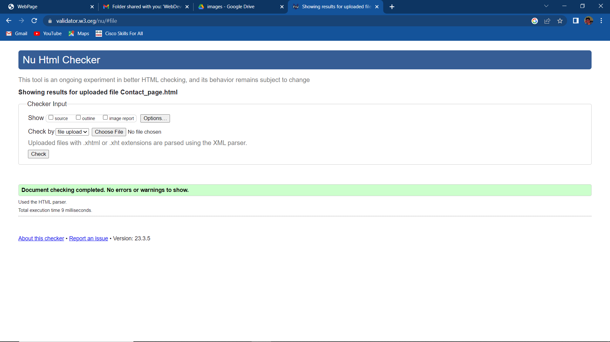
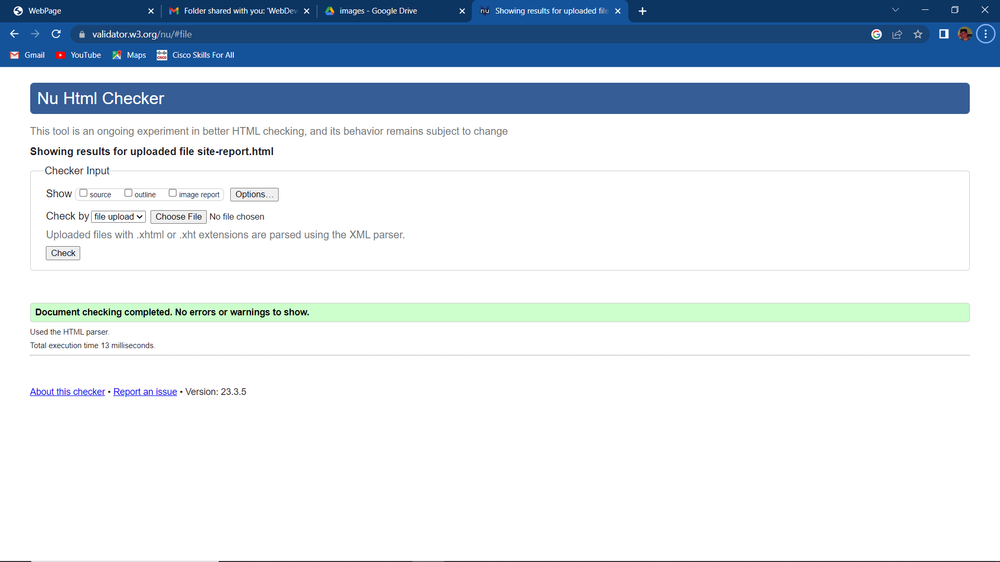
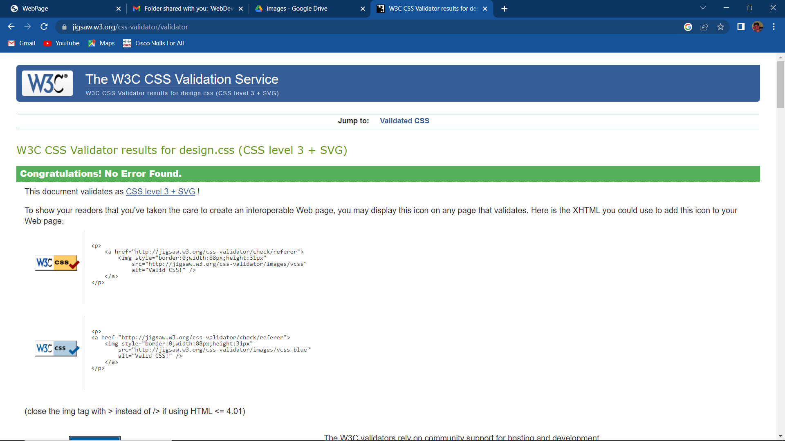
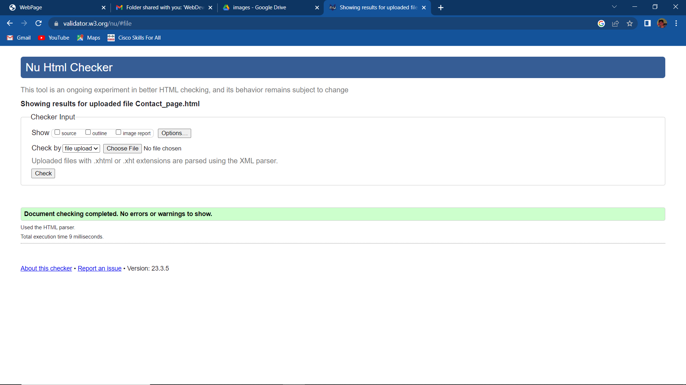
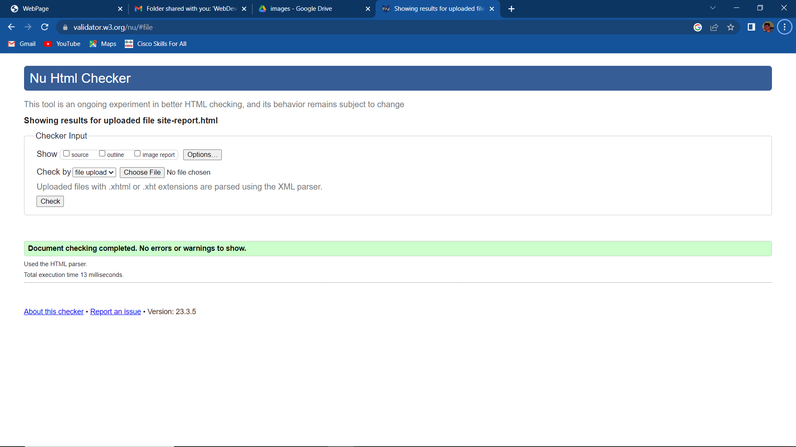
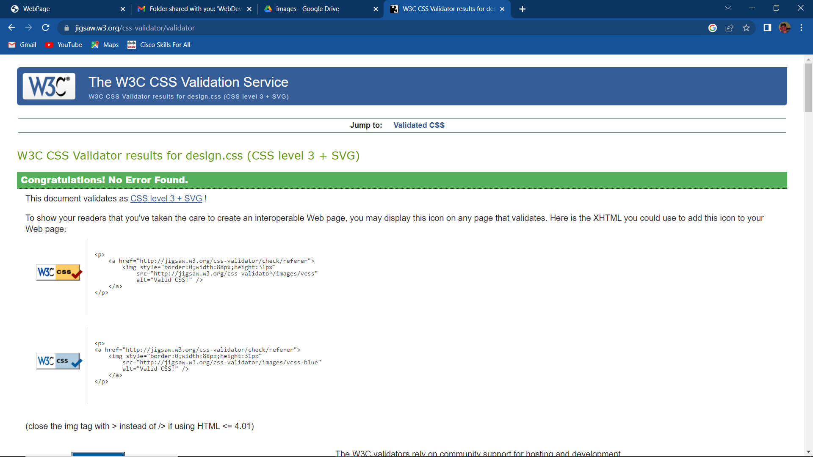

During my assignment to create a portfolio website using HTML and CSS, I gained a wealth of experience and skills that I believe will be useful in my future web development projects. The project involved designing and implementing a website with a maximum of 5 pages to showcase personal projects, skills, and achievements.I gained a solid understanding of HTML and CSS fundamentals. I learned about different HTML tags and how to use them effectively in creating web pages. Additionally, I learned about CSS selectors, properties, and values and how to apply them to create an aesthetically pleasing website.I had the opportunity to put into practice various web design principles that I learned during the project. I gained a deeper understanding of typography, color theory, layout, and other design concepts. These principles helped me create a website that was visually appealing, easy to navigate, and user-friendly.The project had a strict deadline, which required effective time management. I learned to prioritize tasks and work efficiently to complete the project on time. I also developed the ability to multitask, allowing me to handle different aspects of the project simultaneously.During the project, I encountered several issues, such as coding errors and compatibility issues between different browsers. These challenges helped me develop problem-solving skills, which were crucial in identifying and fixing the issues.creating a website requires a high level of attention to detail. I learned to pay attention to small details such as proper indentation, consistent font styles, and spacing. These details made the website look more professional and polished. In conclusion, the project provided me with valuable experience and skills in HTML and CSS, web design principles, time management, problem-solving, and attention to detail. I am confident that the skills and knowledge gained during the project will be useful in my future web development projects.



Code with Harry youtube channel Youtube.com. 2023. Before you continue to YouTube. [online] Available at: (https://youtu.be/BsDoLVMnmZs) [Accessed 12 March 2023].
dezYoutube.com. 2023. [online] Available at: (https://www.youtube.com/watch?v=DZg6UfS5zYg) [Accessed 12 March 2023].
W3schools.com. 2023. W3Schools Free Online Web Tutorials. [online] Available at: (https://www.w3schools.com/) [Accessed 12 March 2023].